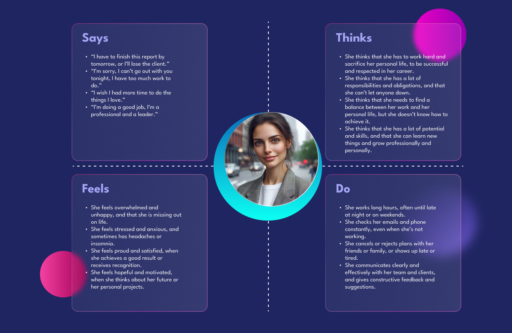
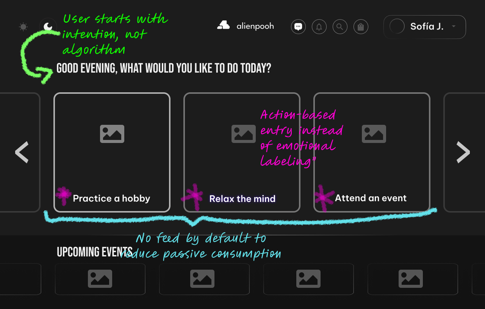
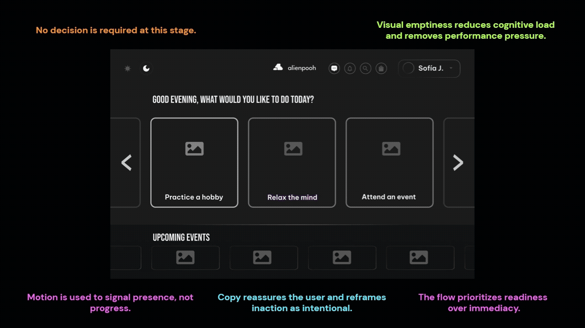
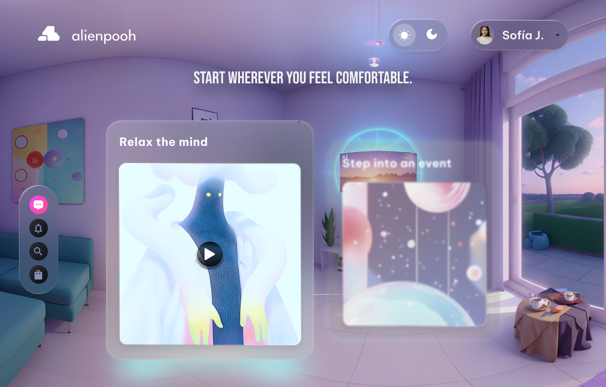

Alienpooh
A digital space for emotional well-being and meaningful human connection.

- Role
- Product Designer, end-to-end lead
- Type
- Personal project · product hypothesis
- Platform
- Emotional well-being experience in VR
- Result
- ★ A direction validated with real users
- What I worked on
- User research & synthesis · UX strategy & AI · Wireframing & prototyping · High-fidelity UI · Design system foundations
People don’t experience life in clean phases.
They move through emotional transitions. New cities. Broken routines. Shifting relationships. Quiet moments of recalibration.
During those moments, the digital tools meant to support emotional well-being often do the opposite: they fragment attention, over-categorize feelings, and turn reflection into another task to manage.
Alienpooh started as a response to that tension.
A personal exploration into how digital spaces could support emotional awareness and meaningful connection, without noise, pressure, or performative vulnerability.
My role
I led Alienpooh end-to-end as a Product Designer, owning the experience from early research to final UI execution. This included:
- Defining the emotional and interaction principles
- Translating abstract emotional needs into concrete product decisions
- Designing a scalable system rather than a single flow
Alienpooh is not a feature concept, it is a product hypothesis.
Scope
The scope focused on depth rather than breadth. Every decision prioritized emotional clarity over feature density.
The challenge
Emotional tracking, journaling, and social connection often live in separate tools. Switching between them creates cognitive and emotional fatigue.
How might we design a single, intuitive space that supports emotional awareness, expression, and connection, without overwhelming the user?
Understanding the users

Research revealed a consistent pattern: users weren't asking for more emotional tools, they were asking for less noise. Across interviews and synthesis, three needs surfaced clearly:
- Emotional reflection needed to feel private, calm, and non-judgmental
- Connection felt meaningful only when it was intentional, not algorithmic
- Simplicity increased trust more than customization
The most important insight wasn't behavioral, it was emotional.
Users needed a space that felt safe enough to be unfinished.
Vision & design principles
Alienpooh was designed as a flexible emotional space that adapts to different life rhythms and personal needs. Three principles guided every design decision:
Simplicity
Reduce cognitive load. If an interaction required explanation, it was redesigned.
Emotional clarity
Visual language and interaction needed to feel calm and emotionally neutral.
Flexibility
The product adapts to the user's life rhythms instead of asking the user to adapt to the product.
These principles acted as constraints, not aspirations.
Wireframes & early exploration
Early wireframes focused less on layout and more on emotional pacing. During testing, users consistently paused before saving entries or engaging with others. Rather than interpreting this as friction, it was treated as a signal.

That hesitation informed:
- Softer transitions
- Fewer decision points
- Intentional pauses within flows
Interaction design

Micro-interactions avoided gamification or feedback that could imply emotional "progress" or judgment. Animations were subtle, slow and optional.
The product needed to feel like a space users could return to, not something that demanded engagement.
Emotional design here was about restraint, not expressiveness.
Design execution

The final UI balances emotional warmth with functional clarity, supported by a scalable design system.
Outcome
Alienpooh resulted in a unified emotional experience that:
- Unified emotional reflection and connection into a single space
- Reduced cognitive and emotional load
- Felt calm and emotionally supportive
- Provided a scalable system for future growth
The outcome is not a finished product, it is a validated direction.
What's next: an AI companion layer
The next step for Alienpooh is exploring how AI could make the space feel personal without making it feel watched. Instead of more features, a quiet layer that learns alongside the user:
- Guiding each person through the space at their own pace
- Learning from their stress levels and emotional patterns over time
- Recommending activities that fit how they feel today, not a generic routine
The same principles still apply: no judgment, no gamified "progress", and the user always in control of what the product knows about them. A working prototype is in progress.
Designing Alienpooh reinforced that strong products are not only usable, they are emotionally aware. Sometimes, the most meaningful design decision is to step back and allow space.
Emotional well-being tools don't need to motivate, optimize, or quantify feelings. Alienpooh exists as a reminder that design can support humans, without trying to fix them.